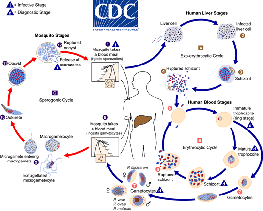
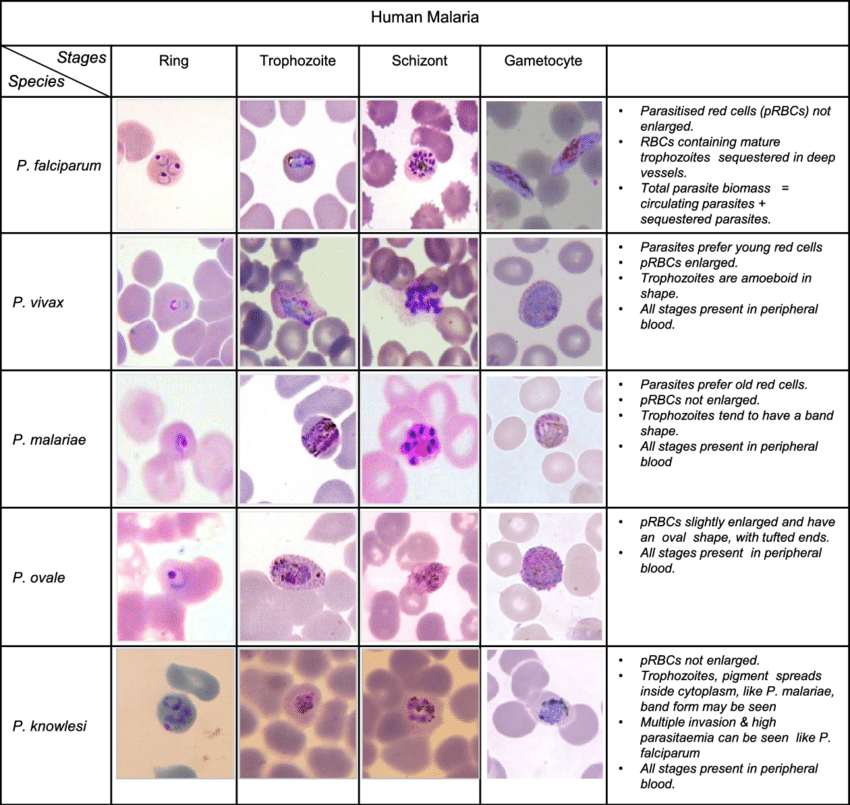

MALARIA
Introduction
Malaria, a protozoan infection transmitted by anopheline mosquitoes, is the most important parasitic disease of humans. Around 3.3 billion people in endemic areas are at risk of malaria and 7250 million clinical cases occur annually. Nearly 1 million die annually, largely African infants and young children. There are four human malaria parasite species (Plasmodium falciparum, P. vivax, P. ovale, and P. malariae), and human infection with the macaque malaria species P. knowlesi is increasingly recognized in Southeast Asia. The clinical manifestations of malaria vary greatly, depending on a number of factors including the infecting malaria species (P. falciparum causing the vast majority of severe disease), transmission intensity, and the degree of resistance, acquired and genetic, of the host.
Life cycle and transmission
The life cycle of the malarial parasite alternates between the sexual cycle in the invertebrate host (the female Anopheles mosquito) and the asexual cycle in the vertebrate host (in this case, human).
- Transmission occurs when the mosquito, requiring blood for the development of her eggs, bites the human host and injects motile sporozoites into the bloodstream, which then invade hepatocytes, where they develop into liver schizonts.
- When each schizont ruptures, thousands of merozoites are released that invade red cells and initiate that part of the cycle responsible for all the clinical manifestations of the disease.
- Either immediately after release from the liver or (in the case of P. falciparum) after several asexual cycles, some parasites develop into longer-lived, morphologically distinct sexual forms, gametocytes.
- Male and female gametocytes ingested by mosquitoes taking a blood meal combine to form a zygote, which matures into an ookinete that encysts in the gut wall.
- There an oocyst develops, expanding by asexual division until it bursts, releasing numerous sporozoites that migrate to the salivary glands. These await inoculation into a human host when the mosquito next feeds.

The malaria parasite life cycle involves two hosts. During a blood meal, a malaria-infected female Anopheles mosquito inoculates sporozoites into the human host The number 1. Sporozoites infect liver cells The number 2 and mature into schizonts The number 3,\ which rupture and release merozoites The number 4. (Of note, in P. vivax and P. ovale a dormant stage [hypnozoites] can persist in the liver and cause relapses by invading the bloodstream weeks, or even years later.) After this initial replication in the liver (exo-erythrocytic schizogony The letter A), the parasites undergo asexual multiplication in the erythrocytes (erythrocytic schizogony The letter B). Merozoites infect red blood cells The number 5. The ring stage trophozoites mature into schizonts, which rupture releasing merozoites The number 6. Some parasites differentiate into sexual erythrocytic stages (gametocytes) The number 7. Blood stage parasites are responsible for the clinical manifestations of the disease.
The gametocytes, male (microgametocytes) and female (macrogametocytes), are ingested by an Anopheles mosquito during a blood meal The number 8. The parasites’ multiplication in the mosquito is known as the sporogonic cycle The letter C. While in the mosquito’s stomach, the microgametes penetrate the macrogametes generating zygotes The number 9. The zygotes in turn become motile and elongated (ookinetes) The The number 10 which invade the midgut wall of the mosquito where they develop into oocysts The number 11. The oocysts grow, rupture, and release sporozoites The number 12, which make their way to the mosquito’s salivary glands. Inoculation of the sporozoites into a new human host perpetuates the malaria life cycle .
Incubation periods
- P. falciparum 7–14d usually, but may be longer (up to 6wks) in those with partial immunity or those on inadequate prophylaxis.
- P. vivax 12–17d, but may relapse months or years later as a result of the reactivation of a dormant form in the liver called the hypnozoite.
- P. ovale 15–18d but may relapse months or years later as a result of the hypnozoite.
- P. malariae 18-40d and has no hypnozoite form.
Epidemiology
Etiology
KEY DIAGNOSTIC POINTS
- Patients with suspected malaria should have parasitological confirmation of diagnosis with either microscopy or rapid diagnostic test (RDT) before antimalarial treatment is started.
- Treatment based on clinical grounds shouldonly be given if diagnostic testing is not immediately accessible within 2 hours of patients presenting for treatment.
- Prompt treatment – within 24 hours of fever onset – with an effective and safe antimalarial is necessary to effect a cure and prevent life-threatening complications.
Symptoms
Signs
Investigations
Microscopy:
Microscopy (morphologic analysis) continues to be the “gold standard” for malaria diagnosis. Parasites may be visualized on both thick and thin blood smears stained with Giemsa, Wright, or Wright-Giemsa stains. Giemsa is the preferred stain, as it allows for detection of certain morphologic features (e.g. Schüffner’s dots, Maurer’s clefts, etc.) that may not be seen with the other two. Ideally, the thick smears are used to detect the presence of parasites while the thin smears are used for species-level identification. Quantification may be done on both thick and thin smears.

More Tables & Images
Comparison Under Microscope:
Antigen Detection:
In addition to microscopy and molecular methods, there are methods for detecting malaria parasites on the basis of antigens or enzymatic activities associated with the parasites. These methods are often packaged as individual test kits called rapid diagnostic tests or RDTs.
These methods include, among others:
- detection of an antigen (histidine rich protein-2, HRP-2) associated with malaria parasites (P. falciparum)
- detection of a Plasmodium specific aldolase
- detection of a Plasmodium associated lactate dehydrogenase (pLDH) either through its enzymatic activity or by immunoassay